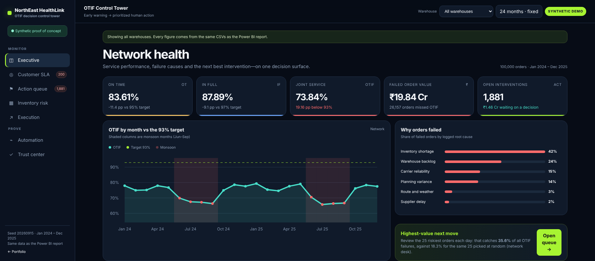

Project screens (HTML prototype)Select a view to inspect
Case study 01 · Predictive operationsSynthetic decision system
OTIF & Inventory Risk Control Tower
Which orders need intervention before an OTIF failure? The control tower ranks recoverable risks and keeps approval with the operator.
3risk checkpoints
18 / 18checks reconciled
35.6%failures caught at 25 orders/day
- Decision
- Prioritize urgent orders by risk, time left and recoverability.
- Proof
- 18 headline numbers reconciled between Power BI and an independent Python script, a calibrated risk score (0.9 pp average gap) and an inspectable trust center.
- Boundary
- Synthetic orders and simulated actions; no production intervention claimed.